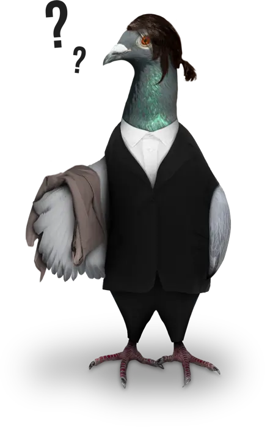

{% extends 'layout.html' %}
{% block content %}

<style>
    .subcontent {
        text-align: left;
        color: #000000;
        left: 50px;
        font-size: 50px;
    }

    .content {
        text-align: left;
        color: #000000;
        font-size: 18px;
        margin-bottom: 20px;
    }

    .image {
        text-align: right;
    }

    .title {
        color: #000000;
        left: 50px;
        font-size: 180px;
        margin: 0;
    }
    
    body {
        margin: 0;
        font-family: 'Arial', sans-serif;
    }

    .conteudo {
        display: flex;
        justify-content: center;
        align-items: center;
        height: 100vh;
    }

    .botao {
        background-color: rgb(255, 0, 0);
        color: white;
        padding: 10px;
        border: none;
        border-radius: 5px;
        width: 100%;
        margin-top: 10px;
        cursor: pointer;
    }
    .voltar {
        margin-top: 30px;
        text-decoration: none;
    }

</style>

<div class="conteudo">
    <div class="textos">
        <h1 class="title">404</h1>
        <div class="subcontent" >Página não encontrada</div>
        <div class="content" style="text-align: center;">A página que você procura não existe ou não está disponível no momento.</div>
        <a class="botao voltar" href="/">VOLTAR PARA A PÁGINA INICIAL</a>
    </div>

    
</div>

{% endblock %}